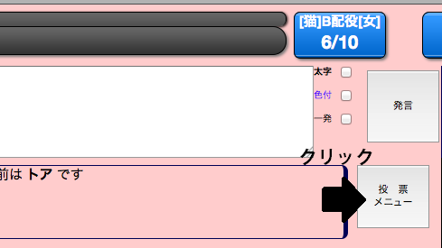
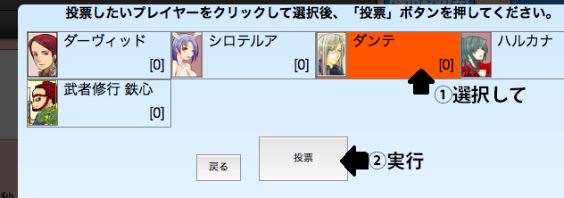
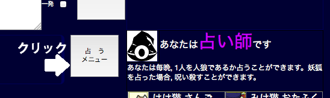
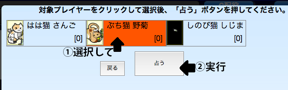

投票の仕方
夕方の間、生存者は「投票メニュー」ボタンが押せるようになります。

投票メニュー上で、投票したいプレイヤーをクリックして選択後、
投票ボタンを押すと、投票することができます。
投票時間固定の村では、投票先は時間内ならば何度でも変更可能です。
夕方の時間の終了間際(残り2秒以下程度)に投票を行っても、投票を受け付けない場合があります。
時間に余裕を持って投票するようにしてください

能力実行の仕方
明け方の間、占い師/狩人/人狼/少女/妖術師は能力実行メニューボタンを押せるようになります。

能力メニュー上で、実行したいプレイヤーをクリックして選択後、
実行ボタンを押すと、能力を実行することができます。
役職時間固定の村では、狩人の護衛先、人狼の襲撃先は時間内ならば何度でも変更可能です。
役職時間非固定の場合、人狼の襲撃は明け方の時間が半分経過してから可能になります。
明け方の時間の終了間際(残り2秒以下程度)に対象を決定しても、操作を受け付けない場合があります。
時間に余裕を持って操作するようにしてください

『沈黙』ボタンの使い方
昼・夜(ただし1日目の夜は不可)に多数の生存者が押すと次のフェーズに移ります。
昼は生存者の半数以上、夜は生存者全員が押すと発動します。
沈黙ボタンを押した事は、他の生存者には知られません。
迷惑者通報の仕方
ゲーム終了後、禁止事項を故意に行うなどした悪質なプレイヤー1人を通報できます。
フェーズが 事件終了 の時に開ける通報メニューから、投票や能力実行と同じ要領で通報することができます。
その村で多数のプレイヤーから通報を受けたプレイヤーは、ペナルティの対象となります。